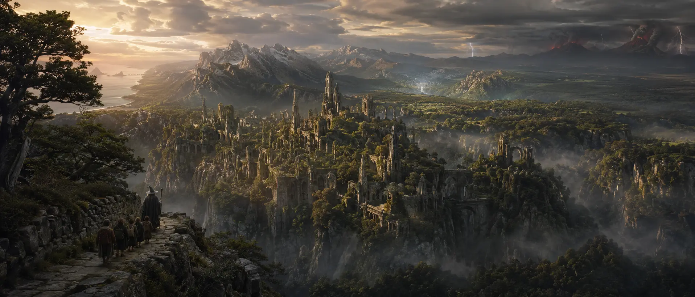

A criação da Terra-média
A Terra-média é o cenário principal de muitas narrativas de Tolkien. Ela possui povos, reinos, línguas, lendas, guerras antigas e personagens marcantes.
Povos importantes
- Hobbits
- Elfos
- Anões
- Homens
- Orcs
Conheça melhor a história do autor e de seu universo literário.
John Ronald Reuel Tolkien nasceu em 1892 e ficou conhecido por criar um dos universos fictícios mais detalhados da literatura. Além de escritor, ele foi professor universitário e estudioso de línguas.
Sua formação em filologia influenciou diretamente sua obra. Antes mesmo de criar muitas histórias, Tolkien já desenvolvia idiomas, nomes, povos e tradições que depois fariam parte da Terra-média.

A Terra-média é o cenário principal de muitas narrativas de Tolkien. Ela possui povos, reinos, línguas, lendas, guerras antigas e personagens marcantes.
A tabela abaixo apresenta algumas obras relacionadas ao universo de Tolkien.
| Obra | Ano de publicação | Tipo |
|---|---|---|
| O Hobbit | 1937 | Romance de fantasia |
| O Senhor dos Anéis | 1954-1955 | Romance dividido em três volumes |
| O Silmarillion | 1977 | Mitologia ficcional |
| Contos Inacabados | 1980 | Coletânea de textos |
Assista ao vídeo abaixo do filósofo Guilherme Freire explicando a importância de Tolkien para além da literatura e para a cultura pop, destacando a riqueza filosófica e metáfisica presente em suas obras, sendo uma leitura que pode enriquecer a mente e o espírito de qualquer pessoa, mesmo aquelas que não são fãs de fantasia.